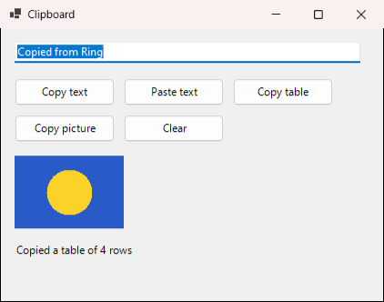

The clipboard
Copy and paste is how programs share data on a computer. This lesson puts text, a table for a spreadsheet and a picture on the clipboard, reads text back, clears it, and leaves the clipboard as the user had it.
What you will learn#
Clipboard.SetText,GetTextandContainsText,- a table that a spreadsheet pastes as cells (tabs and new lines),
SetImage,ContainsImageandGetImage,Clear,- why a program that tests the clipboard puts back what it found.
The clipboard belongs to the whole computer: every program can read and replace it. The tutorial A small text editor used the edit commands of a text box; this lesson uses the clipboard itself, which also copies to and from other programs.
The program#
# the clipboard - text, a table for a spreadsheet, a picture, and leaving the clipboard as the user had it
load "dotnet.ring"
using {
"System.Drawing"
"System.Threading.Tasks"
"System.Windows.Forms"
}
# controls and state that the event code uses are global variables
oForm = ""
oEdit = ""
oStatus = ""
oPicture = ""
aTable = [ ["Item","Price"], ["Tea","2.50"], ["Coffee","3.20"], ["Juice","4.00"] ]
cBefore = ""
func main
oForm = uiForm("Clipboard",420,300)
oEdit = uiTextBox(oForm,15,15,380,26)
oEdit.Text = "Copied from Ring"
uiButton(oForm,"Copy text",15,55,110,30,"copyText()")
uiButton(oForm,"Paste text",135,55,110,30,"pasteText()")
uiButton(oForm,"Copy table",255,55,110,30,"copyTable()")
uiButton(oForm,"Copy picture",15,95,110,30,"copyPicture()")
uiButton(oForm,"Clear",135,95,110,30,"clearClipboard()")
oPicture = uiPictureBox(oForm,15,140,120,80)
oPicture.Image = makePicture()
oStatus = uiLabel(oForm,"Ready",15,235,380,24)
uiRun(oForm)
# --------------------------------------------------------------------------
# The clipboard is shared by all programs, so a program that uses it for its own work (a test, for example) puts back what it found.
# 1. Text. SetText puts a text on the clipboard; GetText reads it (it needs NULL: the method has a second form). ContainsText asks first.
func copyText
oClipboard = new Clipboard()
oClipboard.SetText(oEdit.Text)
oStatus.Text = "Copied " + len(oEdit.Text) + " characters"
func pasteText
oClipboard = new Clipboard()
cText = readText()
if cText != ""
oEdit.Text = cText
oStatus.Text = "Pasted"
else
oStatus.Text = "The clipboard has no text"
ok
# 2. A table for a spreadsheet. Excel, LibreOffice and others paste text with TABS between the columns and a new line between the rows as
# a table of cells: the program only has to make that text.
func copyTable
cText = ""
for aRow in aTable
cText += aRow[1] + char(9) + aRow[2] + nl
next
oClipboard = new Clipboard()
oClipboard.SetText(cText)
oStatus.Text = "Copied a table of " + len(aTable) + " rows"
# 3. A picture. SetImage puts a bitmap on the clipboard; other programs paste it as a picture.
func copyPicture
oClipboard = new Clipboard()
oClipboard.SetImage(oPicture.Image)
oStatus.Text = "Copied a picture of " + oPicture.Image.Width + " x " + oPicture.Image.Height + " pixels"
# The clipboard belongs to the whole computer, and another program (a clipboard manager, for example) can have it open for a moment:
# a read then gives nothing. Reading again a few times, with a short pause, is the usual answer; the result is "" when there is no text.
func readText
oClipboard = new Clipboard()
for nTry = 1 to 20
if oClipboard.ContainsText(NULL)
cText = oClipboard.GetText(NULL)
if cText != ""
return cText
ok
ok
new Task().Delay(50).Wait(NULL)
next
return ""
func clearClipboard
oClipboard = new Clipboard()
oClipboard.Clear()
oStatus.Text = "The clipboard is empty"
# a small picture made with Graphics: a blue square with a yellow circle
func makePicture
oBitmap = new Bitmap(120,80)
oGraphics = new Graphics().FromImage(oBitmap)
oGraphics.Clear(new Color().FromArgb([ :alpha = 255, :red = 40, :green = 90, :blue = 200 ]))
oBrush = new SolidBrush(new Color().FromArgb([ :alpha = 255, :red = 250, :green = 210, :blue = 40 ]))
oGraphics.FillEllipse([ :brush = oBrush, :rect = new Rectangle(35,15,50,50) ])
oGraphics.Dispose()
return oBitmap
This program uses a generic function (dnStatic) where a class cannot be used. The lesson The generic functions explains them.
How it works#
Text#
SetText(text) puts a text on the clipboard. GetText(NULL) reads the text (the method has more than one form, so it takes NULL when there is nothing to choose). Before reading, ContainsText(NULL) says whether there is text at all: the clipboard can hold a picture, a list of files or nothing. The program shows The clipboard has no text when pasting is not possible instead of showing an empty box.
The clipboard belongs to the whole computer, and another program (a clipboard manager, for example) can have it open for a moment, so a read can answer nothing although there is text. readText therefore asks again, up to twenty times with a pause of 50 milliseconds, and returns an empty text only when there is really none. The same is done for the picture (waitForImage). A test that reads the clipboard needs this; a program that reads it for a user can show an error after the tries.
The checks of this program are in a separate file, selftest/ch10_clipboard.ring:
# the checks of ch10_clipboard.ring: run with ring ch10_clipboard.ring --selftest (the program loads this file and runs selfTest() once its window is shown)
func waitForImage
oClipboard = new Clipboard()
for nTry = 1 to 20
if oClipboard.ContainsImage()
return True
ok
new Task().Delay(50).Wait(NULL)
next
return False
func selfTest
oClipboard = new Clipboard()
cBefore = readText() # keep what the user had on the clipboard
# text: copy, change the box, paste
oForm.Controls.Item(1).PerformClick()
oEdit.Text = "something else"
oForm.Controls.Item(2).PerformClick()
dnAssert("text round trip",oEdit.Text,"Copied from Ring")
dnAssert("text status",oStatus.Text,"Pasted")
# the table: tabs between the cells, a new line after each row
oForm.Controls.Item(3).PerformClick()
cTable = readText()
dnAssert("table text",substr(cTable,char(9),"|"),"Item|Price" + nl + "Tea|2.50" + nl + "Coffee|3.20" + nl + "Juice|4.00" + nl)
# the picture
oForm.Controls.Item(4).PerformClick()
dnAssert("has image",waitForImage(),True)
dnAssert("image size",oClipboard.GetImage().Width,120)
# clear: nothing left, and pasting says so
oForm.Controls.Item(5).PerformClick()
dnAssert("has no text",oClipboard.ContainsText(NULL),False)
oForm.Controls.Item(2).PerformClick()
dnAssert("paste of nothing",oStatus.Text,"The clipboard has no text")
if cBefore != ""
oClipboard.SetText(cBefore) # put it back
okA table#
A spreadsheet (Excel, LibreOffice, Google Sheets) pastes text as a table when the columns are separated by a tab (char(9)) and the rows by a new line. copyTable builds this text from a Ring list of rows, and nothing else is needed: paste it into a spreadsheet and the cells appear. The same text pasted into a plain text box shows the tabs as spaces.
A picture#
SetImage(bitmap) puts a picture on the clipboard and other programs paste it as an image (a drawing program, a word processor, a message window). ContainsImage() asks and GetImage() returns a Bitmap. The picture is drawn with Graphics (the tutorial Images).
Clear#
Clear() removes everything. After it ContainsText(NULL) is false.
Be polite#
The test of this program uses the real clipboard, so it first saves the text that the user had (cBefore) and at the end puts it back. A program should not destroy what the user copied, unless the user asked it to copy something. A program that copies something because the user clicked Copy shows it (the status line says what was copied), so the user knows that the clipboard has changed.
A program should not put passwords on the clipboard without a good reason. When it does (a password manager), it clears the clipboard after a short time.
What you learned#
- reading and writing text on the clipboard,
- a table for spreadsheets,
- pictures on the clipboard,
Clear, and leaving the clipboard as it was.
Exercises#
- Add a button Copy as CSV that puts the table on the clipboard with commas, and quotes the cells that have a comma.
- Add a button that pastes a table from a spreadsheet into a
ListBox(split the rows at the new lines and the cells at the tabs). - Show the length of the clipboard text in the status line each second (a timer; the tutorial Timers and progress).
- Clear the clipboard 20 seconds after copying a text.